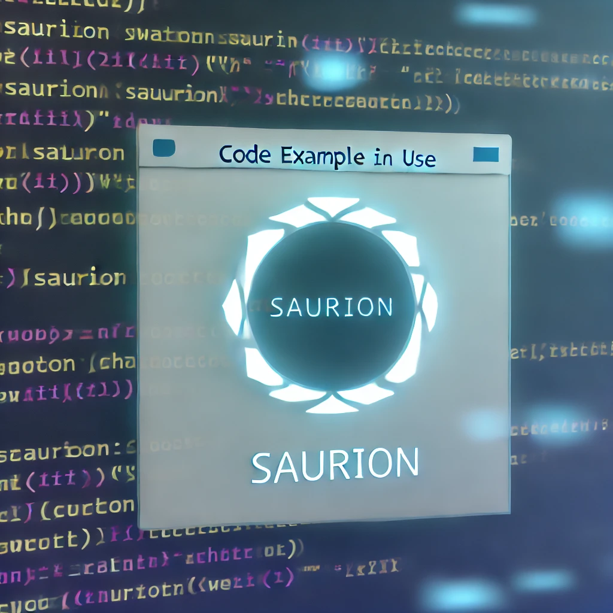

Usage
Here is a basic example of how to use Saurion:
#include <saurion.h>
int main() {
struct saurion *s = saurion_create(4);
saurion_start(s);
// Your code here
saurion_stop(s);
saurion_destroy(s);
return 0;
}Asynchronous Sockets with liburing
Here is a basic example of how to use Saurion:
#include <saurion.h>
int main() {
struct saurion *s = saurion_create(4);
saurion_start(s);
// Your code here
saurion_stop(s);
saurion_destroy(s);
return 0;
}